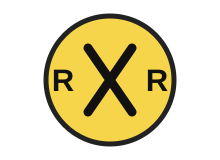

Red GDL decals GDL drivers under 21 must display the MVC red reflective decals on the front and rear plates. (Chapter 1: The New Jersey Driver License System)
Supervising driver experience Your front-seat supervisor must be at least 21, hold a valid New Jersey license, and have at least three years of driving experience. (Chapter 1: The New Jersey Driver License System)
Nighttime hours for under-21 GDL drivers The normal restricted period is 11:01 p.m. to 5 a.m. An applicable MVC exemption may change the rule; don't assume a late errand is exempt. (Chapter 1: The New Jersey Driver License System)
Phone use under GDL A special learner permit holder cannot use a handheld or hands-free phone while driving. Set up directions and calls before departure. (Chapter 1: The New Jersey Driver License System)
Supervised practice for a permit issued under age 21 For permits issued on or after February 1, 2025 to drivers under 21, the MVC requires 50 supervised hours, including 10 in darkness, before a probationary license. (Chapter 1: The New Jersey Driver License System)
Practice New Jersey rules
Say what you would do before opening the answer. If you miss a scenario, review the named section in the handbook before trying the second example.
1. You are 17 and your practice car has the decal only on the rear plate. Is it ready?
Answer: No. Display both decals.
GDL drivers under 21 must display the MVC red reflective decals on the front and rear plates.
Manual: Chapter 1: The New Jersey Driver License System
2. You borrow a second car for the road test. Does the decal on your usual practice car count?
Answer: No. Display the required decals on the car you use.
GDL drivers under 21 must display the MVC red reflective decals on the front and rear plates.
Manual: Chapter 1: The New Jersey Driver License System
3. Your 22-year-old neighbor has held their first license for two years. Can they supervise?
Answer: No. The experience requirement is at least three years.
Your front-seat supervisor must be at least 21, hold a valid New Jersey license, and have at least three years of driving experience.
Manual: Chapter 1: The New Jersey Driver License System
4. A licensed driver from another state has decades of experience. Does their out-of-state license satisfy the MVC supervisor rule?
Answer: No. The required license is a valid New Jersey license.
Your front-seat supervisor must be at least 21, hold a valid New Jersey license, and have at least three years of driving experience.
Manual: Chapter 1: The New Jersey Driver License System
5. You're 17 and plan to begin an ordinary practice drive at midnight. Does having a supervisor make the trip allowable?
Answer: No. Midnight is inside the restricted period.
The normal restricted period is 11:01 p.m. to 5 a.m. An applicable MVC exemption may change the rule; don't assume a late errand is exempt.
Manual: Chapter 1: The New Jersey Driver License System
6. A 19-year-old probationary driver wants to leave at 4:45 a.m. for a social trip. May they drive?
Answer: No. The ordinary restriction runs until 5 a.m.
The normal restricted period is 11:01 p.m. to 5 a.m. An applicable MVC exemption may change the rule; don't assume a late errand is exempt.
Manual: Chapter 1: The New Jersey Driver License System
7. A learner connects a hands-free headset to answer a call on the road. Does that meet MVC rules?
Answer: No. Hands-free phone use is restricted too.
A special learner permit holder cannot use a handheld or hands-free phone while driving. Set up directions and calls before departure.
Manual: Chapter 1: The New Jersey Driver License System
8. You want to call a friend to say you're running late. When should you make the call?
Answer: Before driving or after safely parking.
A special learner permit holder cannot use a handheld or hands-free phone while driving. Set up directions and calls before departure.
Manual: Chapter 1: The New Jersey Driver License System
9. You logged 52 hours but only eight at night. Is the practice record complete?
Answer: No. Log at least two more hours in darkness.
For permits issued on or after February 1, 2025 to drivers under 21, the MVC requires 50 supervised hours, including 10 in darkness, before a probationary license.
Manual: Chapter 1: The New Jersey Driver License System
10. You logged 40 daylight hours and 10 after dark. Have you met both counts?
Answer: Yes. This meets the hour requirements, not the other licensing requirements.
For permits issued on or after February 1, 2025 to drivers under 21, the MVC requires 50 supervised hours, including 10 in darkness, before a probationary license.
Manual: Chapter 1: The New Jersey Driver License System
Road sign self-check
Cue
First read
Red octagon
Stop and check the intersection.
Yellow diamond
Look for the warning and prepare for the condition.
Lane Ends signs warn you to prepare for a lane reduction and merge safely. This page uses original artwork; verify final rules in the New Jersey Driver Manual.
Manual: Driver Safety: Traffic Signs and Signals
12. What hazard does this sign warn about?
Answer: Slippery road surface when wet
Slippery road signs warn that traction may be reduced, especially when wet. This page uses original artwork; verify final rules in the New Jersey Driver Manual.
Manual: Driver Safety: Traffic Signs and Signals

13. This sign marks or warns of:
Answer: A railroad crossing
Railroad crossing signs warn drivers to look, listen, and never stop on tracks. This page uses original artwork; verify final rules in the New Jersey Driver Manual.
Manual: Driver Safety: Traffic Signs and Signals
14. For New Jersey practice, what does this orange sign usually mean?
Answer: Road work or temporary traffic control
Orange signs usually mark construction, maintenance, or temporary traffic patterns. This page uses original artwork; verify final rules in the New Jersey Driver Manual.
Manual: Driver Safety: Traffic Signs and Signals
15. This sign warns that ahead there is:
Answer: A traffic signal
Signal Ahead signs warn drivers to prepare for a traffic light. This page uses original artwork; verify final rules in the New Jersey Driver Manual.
Manual: Driver Safety: Traffic Signs and Signals
16. What does this sign warn about?
Answer: A divided roadway or median begins
The upward arrow on the right bends outward beside the divider shown at the top. A physical median will separate traffic ahead. Check the New Jersey Driver Manual for local rules.
Manual: Driver Safety: Traffic Signs and Signals
17. For New Jersey practice, this sign means drivers should not:
Answer: Pass other vehicles in this zone
This white regulatory sign means do not pass the car ahead even if the road looks clear. A yellow NO PASSING ZONE pennant can mark the start of the zone on the left; its absence does not cancel the restriction.
Manual: Driver Safety: Traffic Signs and Signals
18. This sign warns drivers about:
Answer: A circular intersection ahead
This warning announces a roundabout ahead. Slow and read the entry control. At a modern roundabout, yield to circulating traffic. On older New Jersey traffic circles, check the signs and signals at your approach instead of assuming the layout gives you priority.
Manual: Driver Safety: Traffic Signs and Signals
19. What service does this blue sign identify?
Answer: Hospital or medical services nearby
Blue service signs can identify hospitals, fuel, food, lodging, or other services. This page uses original artwork; verify final rules in the New Jersey Driver Manual.
Manual: Driver Safety: Traffic Signs and Signals
20. For New Jersey practice, this sign warns drivers to watch for:
Answer: Animal crossings
Animal crossing signs warn that animals may enter the roadway unexpectedly. This page uses original artwork; verify final rules in the New Jersey Driver Manual.
Same stopped car, two different traffic conditions. These cases are separate from the 20-question sign score.
In A, the left lane is clear and changing lanes is legal and safe. Does it matter that the flashing lights are on an ordinary car rather than on a police car or tow truck?
No. Approach cautiously and change to the lane that is not next to the stopped car. New Jersey's January 2026 update applies to stationary vehicles displaying flashing or blinking lights, not just emergency or service vehicles.
In B, another driver is alongside you. The limit is 45 mph. Can you stay at the posted speed until you are past the stopped car?
No. Do not force an unsafe lane change. When moving over is impossible, illegal, or unsafe, slow to a speed below the posted limit that fits conditions and be ready to stop. The rule does not give one fixed reduced speed.
Now an officer at the scene signals you to stay in your lane. The left lane looks clear. Should you move over anyway?
No. Follow the officer's direction. The standard move-over procedure applies when an officer has not directed you to do something else.
New Jersey: a one-way arrow does not give you a left on red
Use these practice cases to separate the signal, permitted direction and right of way. They cover an ordinary steady circular red light, with no officer, sign or special signal giving different instructions.
The intersection looks just like one across the state line
You are in the left lane of a one-way street in New Jersey, facing a round red light. The crossing street is one-way to your left and the intersection looks clear. May you turn left after stopping?
Show reasoning
No. The one-way layout does not create a left-on-red exception in this New Jersey example.
Stay stopped until the signal permits the turn.
The ordinary exception after a stop applies to a right turn, not this left turn.
Do not import a rule from Pennsylvania just because the ONE WAY arrows and the street layout look the same.
The signal now permits the left turn, but someone is crossing the street you would enter. Does the change mean you can turn through the crosswalk?
Check
No. Wait until you can complete the turn safely without crossing the pedestrian's path.
The right turn is available, but the crosswalk is occupied
You now intend to turn right on a round red light in New Jersey. There is no turn restriction, but a person is crossing the road you would enter. What should you do?
Show reasoning
Come to a full stop before beginning the turn.
Remain stopped for the crossing pedestrian.
Only make the right turn when you have yielded to traffic, can turn safely, and no sign prohibits it.
A permitted right turn is not a right of way. A stop is necessary; it is not enough when someone is still crossing.
The crosswalk clears, but now you notice a NO TURN ON RED sign. Can you make the right turn?
Check
No. Stay stopped until the signal permits the turn. A clear crosswalk does not override a posted restriction.